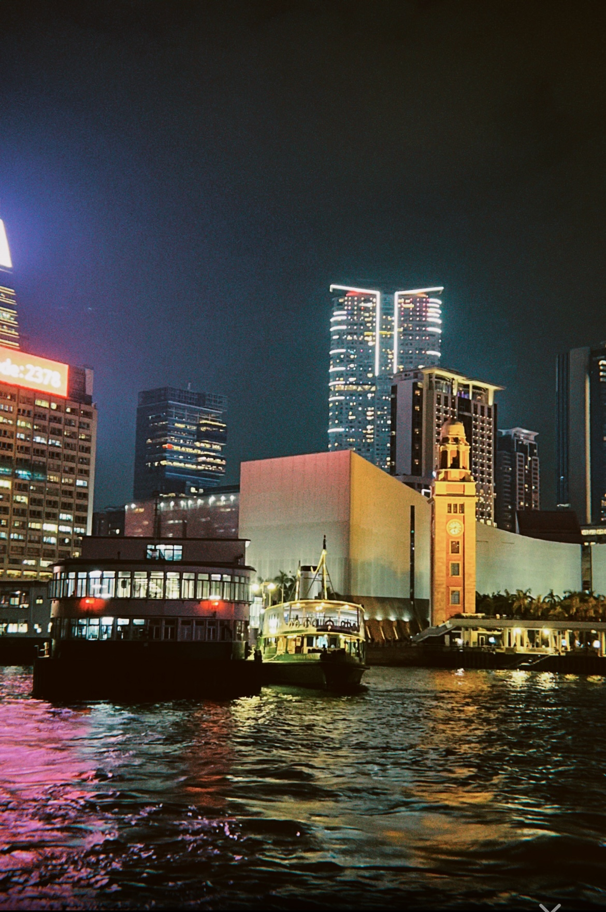

Hong Kong is a vibrant, densely populated city located on the southern coast of China. Known for its iconic skyline, deep natural harbor, and rich cultural heritage, it is a Special Administrative Region (SAR) of China, operating under the "one country, two systems" framework since its handover from British rule in 1997.The city blends modernity with tradition, featuring towering skyscrapers alongside historic temples, bustling street markets, and a diverse culinary scene. Hong Kong is also celebrated for its festivals, such as the Lunar New Year and Mid-Autumn Festival, and its lush landscapes, which include country parks, hiking trails, and islands.
Good Place To Go 1
Photo: Taken in 2024
Lee Tung Avenue, located in the heart of Hong Kong’s Wan Chai district, is a vibrant pedestrianized street known for its blend of cultural heritage and modern sophistication. Once renowned as the “Wedding Card Street” for its many printing shops specializing in wedding invitations, the avenue has transformed into a contemporary shopping and lifestyle destination following an urban redevelopment project. Despite its modern facade, Lee Tung Avenue retains its connection to its storied past through design elements and cultural events that celebrate its rich history.
The avenue features a picturesque tree-lined boulevard adorned with European-style architecture and a mix of local and international boutiques, dining establishments, and lifestyle stores. Its open-air design is complemented by vibrant seasonal decorations, making it a popular destination for both locals and tourists seeking a unique shopping and leisure experience. Regularly hosting cultural events, art exhibitions, and live performances, Lee Tung Avenue remains a lively hub of activity that fosters a sense of community.
A hallmark of Lee Tung Avenue is its commitment to sustainability and innovation, exemplified by its use of green building practices and smart technologies. It also emphasizes preserving Hong Kong’s cultural identity through heritage-themed installations and interactive experiences. Whether for a leisurely stroll, a gourmet meal, or a glimpse into Hong Kong’s history, Lee Tung Avenue offers an enchanting escape that bridges the past and present.
Good Place To Go 2
Photo: Taken in 2024
a small island located southwest of Hong Kong Island, is known for its laid-back charm, rich history, and vibrant culture. With its narrow streets and absence of cars, the island offers a stark contrast to Hong Kong's bustling urban landscape. Visitors are greeted by a picturesque harbor lined with colorful fishing boats, giving a glimpse into the island's long-standing fishing traditions. Cheung Chau is particularly famous for its annual Bun Festival, a unique celebration featuring lion dances, a bun-snatching competition, and parades that attract both locals and tourists.
The island boasts a variety of attractions that cater to different interests. History enthusiasts can explore the Pak Tai Temple, dedicated to the Taoist deity Pak Tai, which dates back to the late 18th century. Nature lovers can hike the Cheung Chau Family Walk, offering scenic views of the coastline and access to secluded beaches like Tung Wan Beach. The island is also a hotspot for fresh seafood, with numerous restaurants serving delicacies such as salt-and-pepper squid and steamed fish caught by local fishermen.
Cheung Chau's relaxed vibe and cultural richness make it a favorite weekend getaway for residents and a must-visit destination for tourists. Its blend of natural beauty, historical sites, and local delicacies creates a unique experience, offering a glimpse into Hong Kong's traditional side. Whether you're looking to unwind on the beach, explore cultural landmarks, or enjoy a feast of fresh seafood, Cheung Chau has something for everyone.
Good Place To Go 3

Photo: Taken in 2025
Victoria Harbour located between Hong Kong Island and the Kowloon Peninsula, is one of Hong Kong's most iconic landmarks. Known for its stunning panoramic views, the harbor serves as a natural gateway to the South China Sea and has historically been a vital hub for international trade and maritime activity. Its deep waters and strategic location have played a significant role in Hong Kong’s development as a global financial and logistics center.
The harbor is a vibrant blend of tradition and modernity. By day, it bustles with ferries, container ships, and traditional Chinese junks, showcasing Hong Kong's dynamic economic activity. At night, the skyline transforms into a dazzling spectacle of light and color with "A Symphony of Lights," a nightly multimedia show that illuminates the skyscrapers on both sides of the harbor. Iconic landmarks like the International Finance Centre (IFC), Bank of China Tower, and the Hong Kong Observation Wheel frame the skyline, offering visitors a glimpse of the city's architectural brilliance.
Harbour also holds cultural significance as a symbol of Hong Kong’s identity. It is a gathering place for locals and tourists, with attractions such as the Avenue of Stars and the Star Ferry, which has been in operation since 1888. Festivals like the Dragon Boat Festival and fireworks during Lunar New Year bring the harbor to life, highlighting Hong Kong's rich heritage and vibrant community spirit. Whether viewed from a waterfront promenade or a ferry ride, Victoria Harbour remains a must-see destination that captures the essence of Hong Kong.